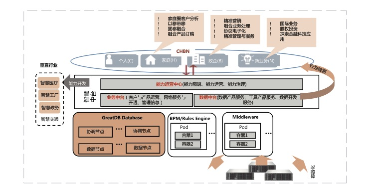

运营商智慧中台西藏业务项目
运营商智慧中台西藏业务项目
项目概述
某运营商智慧中台西藏业务项目，采用万里开源GreatDB数据库作为支撑。PaaS平台通过统一的技术标准，为整个智慧中台提供技术能力支撑，实现了统一的技术组件支撑与技术能力的共享和复用。该系统主要有三部分：PaaS门户、开发交付组件CMP、分布式配置管理中心Amber。
PaaS门户：实现面向其它中台提供一站式PAAS运营、运维、能力展示和能力监控。
开发交付组件：现网系统已实现开发框架和部分自动化测试功能。新建CI/CD功能，完善软件测试功能，更多应用使用开发交付模式。
分布式配置管理中心：实现业务支撑系统的分布式数据源、分布式技术组件、多架构主机运行环境、分布式应用（服务、进程）进行集中化、可视化的在线实时更新配置与管控。
建设方案
按照西藏公司容器云建设现状，新建PaaS平台门户、完善开发交付组件、构建分布式配置管理功能，采用万里开源GreatDB数据库，高度兼容MySQL数据库协议，业务改造成本低，采用高可用模式，实现业务无感知的数据库高可用切换。

核心亮点
· 定制化开发适配应用，如字符集，大小写偏差改造等等。
· 提供完善的管理平台工具，大大减少运维难度。
· 提供完善的备份机制，可实现快速恢复与容错，保证集群高可用。
· 原应用系统采用MySQL数据库，GreatDB完全兼容MySQL语法，应用系统迁移过程平滑稳定，应用代码基本无改造。
· 专业的优化团队，定制化的脚本开发，提供数据库的性能。
· 精细化内存管理，充份利用机器性能，使系统性能最大化运行，多线程并行处理。
项目意义
某运营商智慧中台西藏业务项目的成功上线，标志着在OLTP数据库自主可控的进程中，在国产化落地迈出第一步，同时也意味着自主可控OLTP数据库联合创新项目的可行性得到了验证，为各部门中心积极稳妥推进自主可控OLTP数据库的应用提供了样板工程，是运营商在数据库自主可控的道路上迈出的坚实一步。